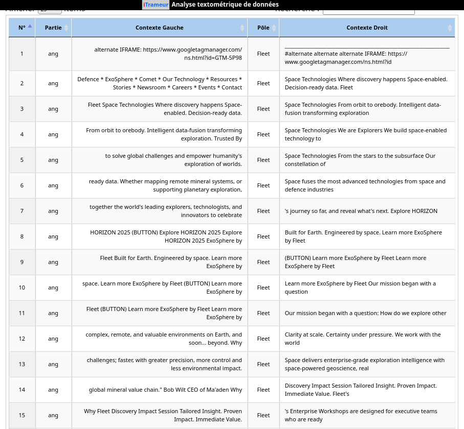

Analyse : Anglais
Étude des contextes et spécificités du mot "Fleet".

Interprétation
Écris ici ton analyse pour l'anglais.
"Le terme 'Fleet' semble être fortement corrélé au domaine militaire (navy) et commercial..."